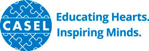
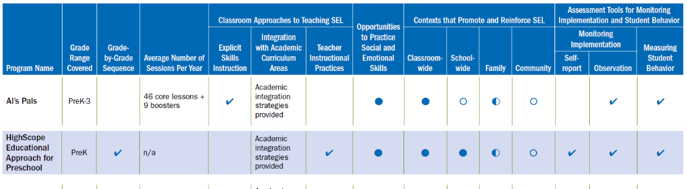
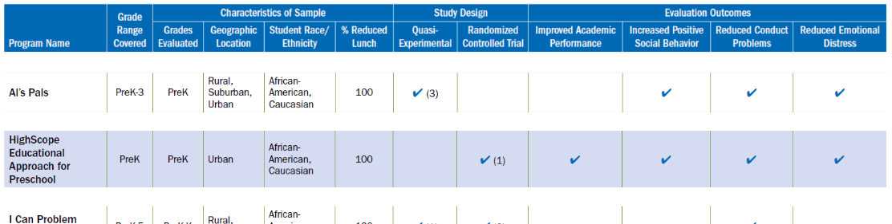
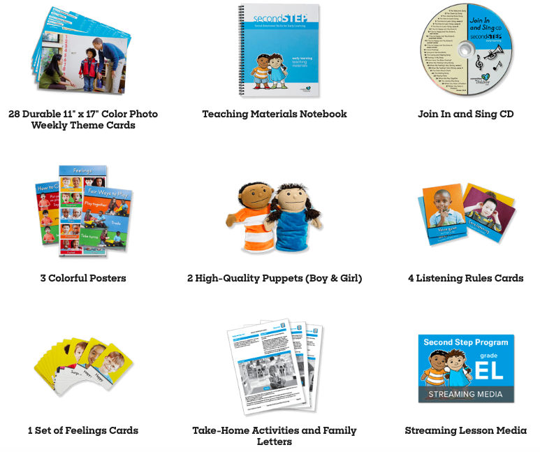

儿童情商培训靠谱吗？
靠谱。
靠谱体现在四个方面：
- 科学理论
- 科学证据
- 课程体系
- 行业规范
本文围绕这四个方面展开。
情商是什么？
大众口中的情商在心理学里称为社会-情绪智力，英文是 social-emotional intelligence，它包括五个方面（Collaborative for Academic, Social, and Emotional Learning, 2003）：
- 了解自己：了解自己的想法，知道自己的优点和缺点，同时又充满信心；
- 管理自己：能够控制冲动，行为得体，能坚持心中的目标；
- 了解别人：能从他人视角看问题，理解他人感受；
- 社交能力：知道如何与他人沟通合作，建立良好关系；
- 合理决策：在了解社会规范和周围环境基础的上，做出合理的决策。
可以发现，这些能力其实我们并不陌生，也非常重要，它们可以让我们更好地与他人互动，在社会中更好地生存。
情商怎么培养？——行业规范
我们来看看美国的情况。
美国有一个很厉害的公益组织，专门推广情商教育，叫「学业、社会、情绪学习协会」，英文是 Collaborative for Academic, Social, and Emotional Learning，简称 CASEL：

为什么说它厉害？因为这个组织制定了一套非常严格的评价情商培训课程的标准，能影响市场，影响政策的制定。我建议大家去搜一下它们的网站，信息量非常丰富，可以帮助大家对比和筛选国内的培训机构。
我这里简单说一下它们制定的标准。标准包括两方面，分别涉及：
课程的设计：比如覆盖多少年级，是否有从一个年级到另一个年级的循序渐进的设计，是否涵盖情商的核心能力，教学方法好不好，课堂氛围如何，等等。
课程的科学证据：比如样本的特点，实验的设计类型，课程有没有效果，等等。
我截个图给大家感受一下。下图是某个机构的课程在课程设计方面的情况：

下图是某个机构的课程在科学证据方面的情况：

要符合 CASEL 的标准非常不容易，不光课程设计上要花心思，还得专门去做研究来证明自己的效果。
CASEL 也筛选了一些达到标准的美国机构，还是建议大家去查查它们网站，有一些内容是公开的。
国内暂时没有类似 CASEL 的机构，整个教育市场也更加鱼龙混杂。客观地讲，有科研证据是非常高的标准，并不是所有优秀的机构都有能力去做研究来为自己背书（关于这个话题可以见另一篇文章）。但是希望这篇文章能帮助大家擦亮双眼，当遇到课程本身乏善可陈，又拼命标榜自己的机构时，能够识别并护住自己的钱包。
情商怎么培养？——课程体系
我这里以被 CASEL 筛选出的一家组织的课程为例，说说情商的课程体系，也就是说它到底上些什么课。
这个组织叫 Committee for Children，他们的课程称为 second step。课程跨度非常大，从学龄前到中学，每个年龄段的内容都不一样。
比如一年级的课包括四个单元，内容涉及：
- 学习技能：包括如何倾听，如何集中注意力，怎么跟随老师的指令等；
- 共情：包括如何识别感受，如何表达关心等；
- 情绪管理：包括识别自己的感情，冷静的技巧等；
- 问题解决：包括如何邀请别人玩，怎么公平地玩等。
到了中学阶段，四个单元的内容就更加成熟，包括如何建立成长心态，如何处理友谊，如何面对挫折，如何解决冲突。
教学形式包括老师引导，视频，故事，游戏，戏剧等手段。比如在低龄段的某个单元里，老师会用玩偶表演一位男孩和女孩的对话，女孩遇到了困难，但害怕求助，男孩和她对话，引导出应该怎么做。表演完后会有讨论和练习的活动。
他们的课程有丰富的课程包。下图是学龄前课程包中的教具：

情商培训有效吗？
情商培训效果方面的研究非常多。2017 年的时候，CASEL 和合作的研究者们发表了一篇总结性的论文（Taylor, Oberle, Durlak, & Weissberg, 2017）。这篇论文总结了 82 个培训项目，涉及了从幼儿园到高中共计 97000 个学生，考查了培训之后半年到 18 年之后的培训效果。结果发现培训后的学生：
- 培训过后三年半，学业成绩比没有培训的学生高了 13%；
- 对自己的态度更积极，对他人以及对学校的态度也更积极；
- 更少有行为问题和情绪问题。
总的来说，情商教育会积极地影响学生的社会技能、学业、生活质量。
参考文献
Collaborative for Academic, Social, and Emotional Learning. (2003). Safe and Sound: An Educational Leader’s Guide to Evidence-Based Social and Emotional Learning (SEL) Programs.
Taylor, R. D., Oberle, E., Durlak, J. A., & Weissberg, R. P. (2017). Promoting Positive Youth Development Through School-Based Social and Emotional Learning Interventions: A Meta-Analysis of Follow-Up Effects. Child Development, 88(4), 1156–1171. http://doi.org/10.1111/cdev.12864